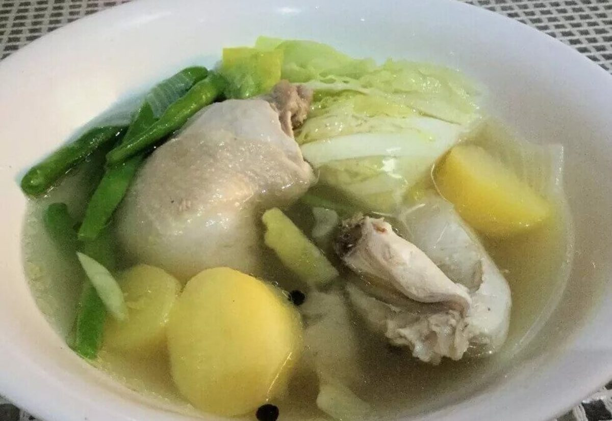

Nilagang Manok Recipe
What is Nilagang Manok?
Nilagang manok is the Tagalog name for Filipino chicken soup. It is a simple and tasty dish that could be a complete meal by itself since it contains meat, potatoes, and vegetables—but traditionally, Filipinos eat it with rice.
Ingredients
1 1/2 lbs. chicken sliced into serving pieces
3 pieces Saba banana sliced
2 pieces potato cubed
5 cups water
2 cups chicken broth
2 bunches bok choy base removed
1 piece onion wedged
3 tablespoons fish sauce
1 teaspoon whole peppercorn
Instructions / How to Cook
1. Boil water in a pot.
2. Add onion and whole peppercorn. Pour-in chicken broth. Cover and let boil.
3. Gently add chicken pieces. Boil in medium heat for 30 minutes.
4. Add banana and potato. Cover and continue to boil for 12 minutes.
5. Season with fish sauce.
6. Add bok choy. Cover the pot and let the residual heat cook it for around 5 minutes.
7. Transfer to a serving bowl. Serve with white rice. Share and enjoy!